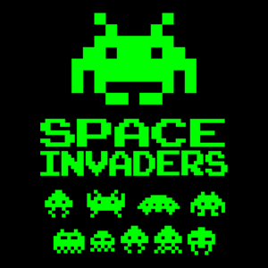
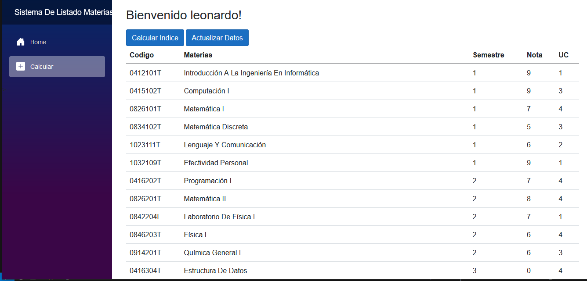

Space Invader en Java
pequeño proyecto del famoso juego space invader desarrollado en Java Swing para Proyecto final de programacion
Lenguajes utilizados
- Java Swing

Obtener Indice Academico
Un pequeño proyecto desarollado en Java Swing para poder cacular el indice academico del semestre desarrollado como una aplicacion Desktop
Lenguajes y tecnologias utilizadas
- Java Swing